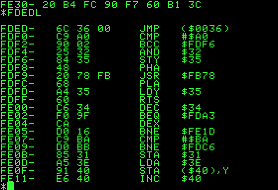

Intorudction
to software architectures
for non IT people
Agenda
- about the presenter
- software architectures
- introduction and definition
- common architecture patterns
- tasks of a software architect
- questions & answers
- test
Who am I

- Peter Bagrij, Lead Software Engineer
- currently working for a swiss investment bank, developing an integrated trading platform which deals with structured products
- 1 year in EPAM, almost 11 years in software development
- architect in 3 projects (Opal, CAQS, MIS-NG)
- technologist by heart, Lean philosophy
- UPSA peter_bagrij@epam.com
Hardware vs software
- hardware
- physical components connected to the computer
- such as RAM, harddisk, CPU, keyboard, mouse
- software
- set of instructions which runs on the hardware
- enables the user to interact with the computer in order to achieve a certain task
to make it simple the hardware would be the body and the software would be the brain
How a software is built up - machine code
CPU can directly execute machine code. The available instruction set depends on the CPU. There is an opertaion for MOVing, copying a value from one place to another, there is another for JMPing to a different address or CMParing two values. The full list of supported operations for X86 based CPUs can be found here
It is hard to work with native instruction codes :-(
Higher level of programming languages were inveted :-)
How a software is built up - compilers
A compiler is a special program that processes statements written in a particular programming language and turns them into machine language or "code" that a computer's processor uses. Typically, a programmer writes language statements in a language such as Pascal or C one line at a time using an editor . The file that is created contains what are called the source statements . The programmer then runs the appropriate language compiler, specifying the name of the file that contains the source statements.

How a software is built up - programming languages
- statements
- functions or methods
- classes
- packages
- modules
Software development lifecycle
Software architecture - definitions #1
The software architecture of a program or computing system is a depiction of the system that aids in the understanding of how the system will behave.
Software application architecture is the process of defining a structured solution that meets all of the technical and operational requirements, while optimizing common quality attributes such as performance, security, and manageability. It involves a series of decisions based on a wide range of factors, and each of these decisions can have considerable impact on the quality, performance, maintainability, and overall success of the application.
Software architecture - definitions #2
Software architecture serves as the blueprint for both the system and the project developing it, defining the work assignments that must be carried out by design and implementation teams. The architecture is the primary carrier of system qualities such as performance, modifiability, and security, none of which can be achieved without a unifying architectural vision. Architecture is an artifact for early analysis to make sure that a design approach will yield an acceptable system. By building effective architecture, you can identify design risks and mitigate them early in the development process
Software architecture encompasses the set of significant decisions about the organization of a software system including the selection of the structural elements and their interfaces by which the system is composed; behavior as specified in collaboration among those elements; composition of these structural and behavioral elements into larger subsystems; and an architectural style that guides this organization. Software architecture also involves functionality, usability, resilience, performance, reuse, comprehensibility, economic and technology constraints, tradeoffs and aesthetic concerns
Software architecture - Mashup
- aids understanding of how the system will behave
- meets requirements
- fullfills quality attributes
- decisions
- blueprint
- work assignment (scope)
- early
- identify design risks and mitigate them
- collaboration of elements
- composition of elements
- interface of elements
- constraints, tradeoffs
Software architecture vs design
Fragments Support
The built in fragments navigation allows to advance step by step inside a page.
Press down to try.
You can discover single elements or even a single part of an element, one at a time.
Fragments navigation is deeply customizable with some configuration options
You can learn how in the documentation.
Fragments Unleashed
Fragments can be more than just delayed piece of page.
Thanks to some special classes you can add a couple of useful custom behaviours.
- The
.stepfragment will partially fades out; - The
.shyfragment will completely hides itself; - You can use this two special fragment types to easily create special effects.
This is a .shy example!
And this is a .step one!
Default HTML Structures
Flowtime.js comes with a default theme that styles the most common HTML structures, like:
1st Level Heading
2nd Level Heading
3rd Level Heading
4th, 5th and 6th Level Heading
Unordered Lists
- An item.
- Another item.
- Just another item.
- Ok, we get it!
Ordered Lists
- One.
- Two.
- Three.
- Four.
Definition Lists
- One:
- a single unit of everything.
- Two:
- the only even prime number.
- Three:
- without the “h” is a plant.
- Four:
- “Quattro” in italian.
Quotes and Citations
My favourite quotation: The bad craftsman blames his tools
.
Sotto un cespo di rose scarlatte dai al rospo the caldo col latte.
Sotto un cespo di rose paonazze tocca al rospo lavare le tazze.
Quoting and citing with <blockquote>, <q>, <cite>, and the cite attribute on HTML5 Doctor.
Theme and Styling
If you don’t like the default theme or you want to build your own (or both things),
or if you want to build a website on top of Flowtime.js,
you can write your own theme and replace the default one.
Theme and core css are in separate files so you can’t break the layout (unless you override some classes).
Fluid Layout
Everything can be fluid, just use em, rem and % units if you want to make an element resizable.
Image Management
Images are fluid like all the other content.
You can insert images in the flow or stack images ones on top the others with a minimal markup overhead to create some fancy fragments tricks.
Go to the next pages to see fluid images in action and how stacked images can be managed, both in the flow or centered in the slide.
Look at the source code to learn how to write the markup.

Stacked Images


Centered Stacked Images


About the Centered Stack
You can center anything, not only images!
Just like this content.
Useful for splash pages and titles.
And you are not limited to stacks, you can center what you want.
Native Parallax Support
By popular demand Flowtime.js includes native parallax support*.
Simply add a parallax class to anything you want to have parallax enabled and configure the amount of distance for all elements or for a single element using data-parallax attribute.
For an example go to the next page; for more info read the documentation.
* By the way: I’m not a parallax fan; but ehi… this is the "web 3.0".
The Invaders from Audiogalaxy


This Page Is Just for Testing the Parallax
In the previous page, from left to right:
- Sax:
- King Mix’s most trusted servant. After a diploma in the music conservatory in the…
- King Mix:
- son of the noble dynasty of the Mix of Censor, he soon shows his…
- Tone:
- the most feared space intruder on Mixer. He flunked the musical exam…
More info about this villains on www.genereavventura.com.
Code Snippets Highlight
Code highlight is a courtesy of Lea Verou’s Prism.
Because I really didn’t want to re-invent the wheel.
You can use what you want, it’s not a dependency (but it’s very smart and cool).
function saySomethingSmart()
{
alert("The bad craftsman blames his tools!");
}.is-not-water {
display: inline-block;
}<h1>The Bad Craftsman Blames His Tools!</h1>Events and Custom Implementations
When navigated to a page Flowtime.js fires a custom flowtimenavigation event full of useful properties to customize or build your components or behaviours.
Read the documentation to learn more about this event and its properties.
Use It! It’s Free
This project is open source, feel free to contribute to the development on Github.
Feedbacks, suggestions and bug reports are welcomes.
Use it as you wish and build great things.
And when you’ll have done let me know the URL, I will appreciate it.
Thank You
Designed and coded by Marco Lago
Interaction/Experience/Game/Designer/Developer
You can find me on Twitter as @marcolago
If you like this work spread the word, you know how ;)